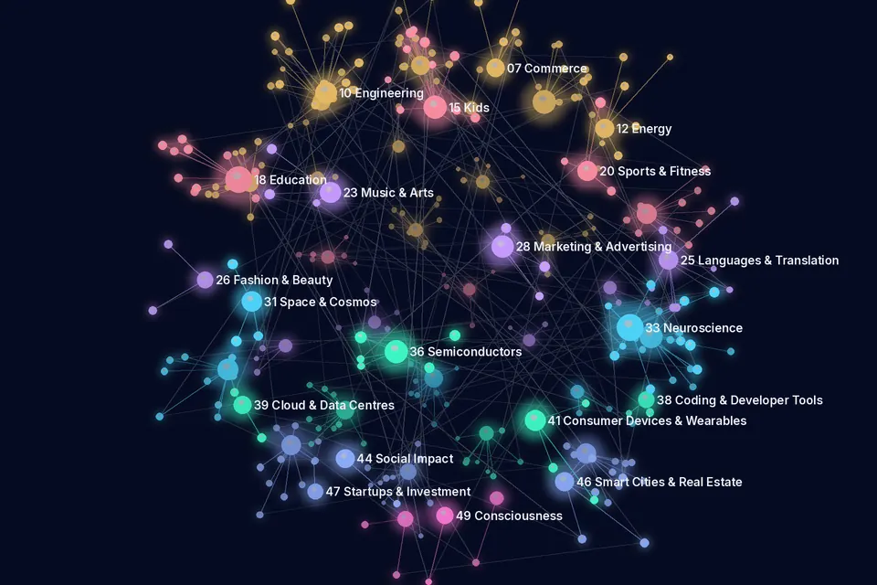

Journal of the AI Universe ✦ Research Papers Today
Research Papers Today
13 November 2026 · 734 new AI research papers in 49 of the 50 categories · Curated by Dr.P.R.K.Varma
515 peer-reviewed papers and 219 preprints, compiled automatically from medRxiv, bioRxiv, PubMed, Crossref, OpenAlex, preprint servers via Crossref (Research Square, Preprints.org, SSRN and others), europepmc, s2. Each line gives the title (linked), authors, venue, date, evidence label and identifier. Abstracts and figures are not reproduced: open the paper to read it. A listing is not an endorsement, and preprints have not been peer-reviewed. Health papers are not medical advice.
Research map in 3D
13 November 2026: the top 279 papers in 49 categories as a 3D network. Large points are categories, small points are papers (brighter = peer-reviewed), and faint lines join papers in different categories that share a topic word in their titles. Drag to rotate, pinch or use + and − to zoom, and tap a paper to open the original. Titles and links only.

Papers per category (49 categories)
01–14 Industries & Sectors 268 papers
01 AI Filmmaking
2 papers · 2 peer-reviewedProject page →- The Translation of Humour using AI tools for subtitling and dubbing: case study of Egyptian movie “Foul El-Seen Al-Azeem”Ayah Samy ghoneimyAl-Mağallah Al-ʿilmiyyaẗ Li Kulliyyaẗ Al-Adāb - Ǧāmiʿaẗ Asyūṭ/Al-Mağallah Al-ʿilmiyyaẗ Li Kulliyyaẗ Al-Adāb - Ǧāmiʿaẗ Asyūṭ · · Peer-reviewed · DOI 10.21608/aakj.2026.536249.2576 · Open access
- Generative AI and the reconfiguration of creative labour: Insights from the film industryAlexandra ManskeTATuP - Zeitschrift für Technikfolgenabschätzung in Theorie und Praxis · · Peer-reviewed · DOI 10.14512/tatup.7314 · Open access
02 AI Agriculture
16 papers · 13 peer-reviewed · 3 preprintsProject page →- Synthetic training data from a virtual light trap enables insect detection for greenhouse pest management without manual annotationJütte L, Kaminski K, Löwen M et al.Smart Agricultural Technology · · Peer-reviewed · DOI 10.1016/j.atech.2026.102723 · Open access
- FTIR Spectroscopy Combined With Chemometric and Artificial Neural Network Modeling for Multicomponent Carbohydrate Quantification in Dairy-Derived PowdersTorres Armendáriz NL, Ramos Sánchez VH, Nápoles Duarte JM et al.Journal of food science · · Peer-reviewed · DOI 10.1111/1750-3841.71608 · PMID 43015134
- Explainable machine learning–based spatial downscaling of multi-depth FLDAS soil moisture to 500 m resolution using artificial neural networks and spatial cross-validationFatemeh Haji Sharafi, Elahe KhesaliEarth Science Informatics · · Peer-reviewed · DOI 10.1007/s12145-026-02302-8
- AeroTea-VLM: a UAV-assisted multimodal visual language model for intelligent disease and pest management in terraced tea plantationsZiyuan Liu, Xue Li, Yunling Zeng et al.Engineering Research Express · · Peer-reviewed · DOI 10.1088/2631-8695/aec0fd
- Driving mechanisms of the spatiotemporal heterogeneity of soil carbon-to-nitrogen ratio in subtropical hilly regions: the interplay between natural pedological context and anthropogenic managementZheng M, Guo X, Huang J et al.Frontiers in Plant Science · · Peer-reviewed · DOI 10.3389/fpls.2026.1967956 · Open access
- CNN-Based Temporal Fusion of UAV and Sentinel-2 Imagery for Crop MonitoringMurguia-Cozar A, López-Canteñs GdJ, Macedo-Cruz A et al.Drones · · Peer-reviewed · DOI 10.3390/drones10110852 · Open access
- An IoT-enabled environmental informatics framework for real-time crop disease detection using attention-driven deep learningR. RajiniGanth, P. Ganesh KumarFrontiers in Environmental Science · · Peer-reviewed · DOI 10.3389/fenvs.2026.1894362 · Open access
- LCIC-YOLO: A Lightweight Rice Pest Detection Network with Local–Context Complementary Representation and Independent Cooperative GatingYang M, Chen C, Shi Y et al.Agriculture · · Peer-reviewed · DOI 10.3390/agriculture16222485 · Open access
- An AI-Driven Federated Framework for Distributed Multimodal Sensing with Implications for Loan Risk PredictionXutong Wang, Haoting Shi, Wei Hong et al.Sensors · · Peer-reviewed · DOI 10.3390/s26227120 · Open access
- Enhancing crop sustainability: GSEBNet for precise tomato leaf disease classificationSheraz Khan M, Ahmad I, Nisa K et al.Frontiers in plant science · · Peer-reviewed · DOI 10.3389/fpls.2026.1947340 · PMID 43016846 · Open access
03 AI Defence
1 paper · 1 peer-reviewedProject page →- Diffusion-Model-Based Target Recognition For OFDM-Based Passive Radar Under Transmitted-Signal-Free ConditionZhao Z, Zheng Y, Zhang B et al.IEEE Sensors Journal · · Peer-reviewed · DOI 10.1109/jsen.2026.3750041
04 AI Healthcare
170 papers · 138 peer-reviewed · 32 preprintsProject page →Research listing only, not medical advice.
- Clinical-SAM: Agentic Test-Time Adaptation of SAM via Physician-in-the-Loop for Clinical Tumor SegmentationBayasi N, Fayyad J, Yousefirizi F et al.IEEE transactions on medical imaging · · Peer-reviewed · DOI 10.1109/tmi.2026.3753143 · PMID 43019264
- Scaling medical imaging report generation with multimodal reinforcement learningLiu Q, Zhang S, Qin G et al.Nature Communications · · Peer-reviewed · DOI 10.1038/s41467-026-78767-4 · Open access
- The COSAS 2024 challenge: Cross-Organ and Cross-Scanner Adenocarcinoma Segmentation for domain generalization in computational pathologyMeng B, Da Q, Long X et al.Medical image analysis · · Peer-reviewed · DOI 10.1016/j.media.2026.104390 · PMID 43014079
- Implications of Image-Level Duplication in Public Glaucoma DatasetsEndo I, Fukuhara Y, Oka SJAMA ophthalmology · · Peer-reviewed · DOI 10.1001/jamaophthalmol.2026.5155 · PMID 43018943
- Speak before the reveal: a practical method to protect clinical reasoning from artificial intelligence scribe deskilling, never-skilling, and mis-skillingJurblum MJournal of the American Medical Informatics Association : JAMIA · · Peer-reviewed · DOI 10.1093/jamia/ocag191 · PMID 43017790
- AI-monitored bioadhesive for sutureless microvascular anastomosisXue F, Zhao S, Tian H et al.Science (New York, N.Y.) · · Peer-reviewed · DOI 10.1126/science.aed8712 · PMID 43019420
- Beyond the Rogue Agent-Preparing Health Systems for AI FailureHertelendy AJ, Miri A, Dameff CJAMA · · Peer-reviewed · DOI 10.1001/jama.2026.24040 · PMID 43018982
- Open foundation models for clinical AIBansal VNature Computational Science · · Peer-reviewed · DOI 10.1038/s43588-026-01094-7
- AToP: An Explainability Framework for Transformer-Based EHR Predictions Using Attribution-Guided Temporal Pattern MiningBelouali A, Kharrazi HmedRxiv (Health Informatics) · · Preprint · DOI 10.64898/2026.11.10.26367753 · Open access
- Transformer-based model for EHR data-derived development for prediction of kidney function trajectories in diabetic kidney diseaseJiwon Ryu, Seong-Eun Moon, Haanju Yoo et al.Scientific Reports · · Peer-reviewed · DOI 10.1038/s41598-026-76546-1 · Open access
05 AI Finance
13 papers · 6 peer-reviewed · 7 preprintsProject page →Research listing only, not financial advice.
- AI innovation quality and the structure of corporate financial assetsNiu T, Si M, Chen X et al.Finance Research Letters · · Peer-reviewed · DOI 10.1016/j.frl.2026.111085
- A unified ML LLM decision support framework for SME financial analytics forecasting risk and advisory recommendationsA. Pimpalkar, Aishi De, Parthiv Abhani et al.Discover Artificial Intelligence · · Peer-reviewed · DOI 10.1007/s44163-026-02742-7
- Credit Risk Identification and Intelligent Resource Management of AI-Enabled Data Asset TransactionsAna WangInformation Resources Management Journal · · Peer-reviewed · DOI 10.4018/irmj.427560 · Open access
- Adaptive Confidence-Aware Transformer–Graph Fusion Network for Robust Credit Fraud DetectionTej Singh, A.J. KumarIstanbul University - Journal of Electrical & Electronics Engineering · · Peer-reviewed · DOI 10.5152/electrica.2026.26267 · Open access
- Credibility displacement in algorithmic financial reporting: a critical review of AI, disclosure credibility and capital-market consequencesHyder AliJournal of Accounting Literature · · Peer-reviewed · DOI 10.1108/jal-06-2026-0363
- Reinforcement Learning in Recommender Systems for Personalized Financial Decision Support: A Systematic Mapping StudyMathias Busubiri Mutembete, Simon Nyaga Mwendia, Edwin Juma OmolInformation · · Peer-reviewed · DOI 10.3390/info17111132 · Open access
- Opportunities And Risks Of AI In Finance And Banking: Current Experience And Future DirectionsGambacorta L, Moshirian F, Pelger M et al.SSRN · · Preprint · DOI 10.2139/ssrn.7686567
- Decoding Cryptocurrency Cycles: A Systematic Literature Review of Spectral Analysis, Econophysical Signal Processing, and Complexity FrameworksPodgórski KPreprints.org · · Preprint · DOI 10.20944/preprints202611.1270.v1 · Open access
- Climate Risk Exposure and Banking Competition: Evidence from China's Listed BanksTao M, Che S, Klein TSSRN · · Preprint · DOI 10.2139/ssrn.7683634 · Open access
- Inventory stress as financial risk: Trade shocks, macro-financial conditions and explainable early warning for U.S. retail and manufacturingRahman MM, Johra FT, Shohan AA et al.Research Square · · Preprint · DOI 10.21203/rs.3.rs-11438198/v1 · Open access
06 AI Law & Investigation
7 papers · 2 peer-reviewed · 5 preprintsProject page →Research listing only, not legal advice.
- CONTEXTUAL VALIDATION OF RISK-RELATED FEATURES IN FORENSIC ANALYSIS SYSTEMS USING ARTIFICIAL INTELLIGENCETaras Fedynyshyn, Olha MykhaylovaKomp'ûternì sistemi ta merežì · · Peer-reviewed · DOI 10.23939/csn2026.02.331 · Open access
- AI-Driven Digital Forensics: A Systematic Review of Capabilities, Limitations, and Research ChallengesAhsan Ul Islam, Narasimha Karpoor Shashidhar, A. B. M. Rezbaul Islam et al.Digital · · Peer-reviewed · DOI 10.3390/digital6040094 · Open access
- No Air for the Law: How Pollution Deters Legal Environmental Claims in French Administrative CourtsToutounji TSSRN · · Preprint · DOI 10.2139/ssrn.7686245
- The Gendered Lens of Justice: Bias in French Administrative Courts and Construction PermitsToutounji TSSRN · · Preprint · DOI 10.2139/ssrn.7686225
- Between legal aspiration and engineering reality: technical and legal barriers to implementing control safeguards for high-risk AI systemsLanguisse FResearch Square · · Preprint · DOI 10.21203/rs.3.rs-11460713/v1 · Open access
- Country Reports on Copyright and AI: SingaporeLee JTTSSRN · · Preprint · DOI 10.2139/ssrn.7683981
- Dynamic Identification of Emerging Cigarette Processing Technologies: Integrating Large Language Models and Patent MapsShen K, Qiu Y, Fan H et al.ESS Open Archive · · Preprint · DOI 10.22541/authorea.15012003/v1 · Open access
07 AI Commerce
4 papers · 3 peer-reviewed · 1 preprintProject page →- Clarification Design for E-Commerce Service Chatbots: Effects of Interaction Mode and Personalization on Task Efficiency and User ExperienceChien‐Hsiung Chen, Ji-Xian HoInternational Journal of Human-Computer Interaction · · Peer-reviewed · DOI 10.1080/10447318.2026.2758548
- A systematic review of theoretical perspectives frameworks and research gaps in AI localization for customer serviceMarwa Khaddor, Iyad Zoakar, Marwa KhaddorDiscover Artificial Intelligence · · Peer-reviewed · DOI 10.1007/s44163-026-02507-2
- HMGN: A multigranular GNN for heterogeneous preference modeling in knowledge-aware recommender systemsChen R, Sun R, Zhu H et al.Neural Networks · · Peer-reviewed · DOI 10.1016/j.neunet.2026.109907
- Predicting Supply Chain Shipment Delays: A Comparative Study of Machine Learning Models and Traditional Statistical MethodsSakib ASMSSSRN · · Preprint · DOI 10.2139/ssrn.7682964 · Open access
08 AI Journalism
3 papers · 3 peer-reviewedProject page →- Artificial intelligence and journalism in Ibero-America: A comparative study of perceptions, practices and challengesPaulo Nuno Vicente, Sara Pérez‐Seijo, Suzana BarbosaEuropean Journal of Communication · · Peer-reviewed · DOI 10.1177/02673231261505818
- Polarity Boundary Innovation Resolves Zero Inflation In Journalistic Sentiment AnalysisYogi Kristiyanto, Meli Andriyani, Fasya NazihahIndonesian Journal of Innovation Studies · · Peer-reviewed · DOI 10.21070/ijins.v28i1.2468 · Open access
- Editorial: Navigating transformation in open, distance and online learning: quality, inclusion, innovation and artificial intelligenceKam Cheong Li, Tian Belawati, Cui-Fang ZhaoAsian Association of Open Universities Journal · · Peer-reviewed · DOI 10.1108/aaouj-11-2026-209
09 AI Architecture
2 papers · 2 peer-reviewedProject page →- LLM-driven multi-agent decision support system for Fangcang shelter hospital deployment integrating BIM data and regulatory codesHuang G, Ng ST, Chen L et al.Automation in Construction · · Peer-reviewed · DOI 10.1016/j.autcon.2026.107374
- Construction Safety Hazard Identification and Corrective Action Generation Based on a Fine-Tuned Vision–Language ModelYiyi Ye, Qianmai Luo, Tongtong ZhaoBuildings · · Peer-reviewed · DOI 10.3390/buildings16224498 · Open access
10 AI Engineering
16 papers · 13 peer-reviewed · 3 preprintsProject page →- Machine-learning surrogates enable rapid prediction of 3-D substrate gradients in industrial bioreactorsPuig-I-Laborda V, Carrasco Muriel J, Castañeda Tena A et al.Nature communications · · Peer-reviewed · DOI 10.1038/s41467-026-78273-7 · PMID 43015267
- LitExtract: a multimodal causality-aware framework for knowledge organization in materials science literatureTing Li, Jianli Zhou, Wenyuan Wu et al.npj Computational Materials · · Peer-reviewed · DOI 10.1038/s41524-026-02380-8 · Open access
- SC-PINN: A Serially Coupled Physics-Informed Neural Network for Multiphysics Coupling Digital Twin Modeling of Through-Silicon ViasSu J, Chen D, Zhang S et al.IEEE Transactions on Computer-Aided Design of Integrated Circuits and Systems · · Peer-reviewed · DOI 10.1109/tcad.2026.3753183
- GraphAgents: Knowledge Graph-Guided Agentic AI for Cross-Domain Materials DesignIsabella Stewart, Tarjei Paule Hage, Yu-Chuan Hsu et al.ACS Materials Au · · Peer-reviewed · DOI 10.1021/acsmaterialsau.6c00100 · Open access
- Edge-based explainable multisensor fault diagnosis for structural health monitoringHeba Al-Nasser, Kosmas Dragos, Kay SmarslyStructural Health Monitoring · · Peer-reviewed · DOI 10.1177/14759217261504351
- Towards Generalisable Virtual Sensing: A Physics-Informed Graph Neural Network Approach On Cantilever BeamsRiccardo Fracasso, Francisco de Nolasco Santos, Wout Weijtjens et al.Machine Learning Engineering · · Peer-reviewed · DOI 10.1088/3049-4761/aec0a1 · Open access
- Analysis of SVM-SMOTE algorithm and AdaBoost-RBF algorithm for low-voltage switch fault diagnosisKAIMIN LIAN, 谢生, Feng Sun et al.Diagnostyka · · Peer-reviewed · DOI 10.29354/diag/242669 · Open access
- Revealing time-regime-dependent defect formation pathways in perovskite single crystals through physics-informed machine learningLiang Z, Dong W, Yang Y et al.Phys Chem Chem Phys · · Peer-reviewed · DOI 10.1039/d6cp03410a · PMID 42922398
- Deep Neural Networks with Spectral Activation Functions: Applications to Numerical PDEsSheng Chen, Tao Tang, Tong WangCommunications in Computational Physics · · Peer-reviewed · DOI 10.4208/cicp.oa-2025-0162
- Monitoring and Process Parameter Optimization of Vanadium–Nitrogen Alloy Production Process by Integrating Deep Reinforcement Learning and Domain KnowledgeXiangyu Zhang, Chunxiao Shi, Zhiming Zhang et al.Processes · · Peer-reviewed · DOI 10.3390/pr14223644 · Open access
11 AI Robotics
12 papers · 10 peer-reviewed · 2 preprintsProject page →- Slip Detection for Robotic Grasping with LSTM and TCN: Edge AI Evaluation on Embedded PlatformsMohammad Haziq Khan, Mario Radke, Majd Hanna et al.Journal of Intelligent & Robotic Systems · · Peer-reviewed · DOI 10.1007/s10846-026-02481-y · Open access
- Machine Learning in Tensegrity Robotics: A Bibliometric and Systematic Review of Control, Design Optimization, Adaptive Locomotion, and State EstimationMba CB, Pal A, Rai HMIEEE Transactions on Automation Science and Engineering · · Peer-reviewed · DOI 10.1109/tase.2026.3752911
- Vehicle-Driving in Spatially Configured Workspace by a Full-Sized Humanoid Platform, HARTJaesung Yang, Harry Bickford, Andrew Esteves et al.Journal of Intelligent & Robotic Systems · · Peer-reviewed · DOI 10.1007/s10846-026-02492-9 · Open access
- Deep Learning-Based Fast Inference of Team Performance in Heterogeneous Multi-Robot SystemsMohammed Yusuf Ansari, Eduardo Feo Flushing, Mohammed Ishaq et al.Journal of Intelligent & Robotic Systems · · Peer-reviewed · DOI 10.1007/s10846-026-02477-8 · Open access
- Transformer-Enhanced Physics Informed Deep Reinforcement Learning for Quadrotor NavigationLaura Sopegno, Simone Martini, Adriano Fagiolini et al.Journal of Intelligent & Robotic Systems · · Peer-reviewed · DOI 10.1007/s10846-026-02479-6 · Open access
- RL-ANA*: A Reinforcement-Learning-Guided Adaptive-Neighborhood A* Algorithm for Mobile Robot Path Planning in Complex EnvironmentsZikang Liu, 鲁守银, Jicai An et al.Engineering Research Express · · Peer-reviewed · DOI 10.1088/2631-8695/aec102
- CAST-DETR: Context-aware spatial-statistical transformer for UAV infrared small target detectionPanpan Duan, Yu Zhang, Liangfu Li et al.Measurement Science and Technology · · Peer-reviewed · DOI 10.1088/1361-6501/aec0bf
- Adaptive Fuzzy Fractional-Order Sliding Mode Control Using an RBF Neural Network Observer for Robotic ManipulatorsSiddig M. ElkhiderMathematics · · Peer-reviewed · DOI 10.3390/math14224150 · Open access
- Deep-Reinforcement-Learning-Based Dynamic Navigation for a Mecanum-Wheeled Mobile RobotChih‐Jer Lin, Hsiang-Yu TsengActuators · · Peer-reviewed · DOI 10.3390/act15110595 · Open access
- Comparative architectural evaluation of CNN models with alternative classifiers for UAV-based detection of damaged green zonesRakhimov N, Kuvandikov J, Tojiyev M et al.Frontiers in artificial intelligence · · Peer-reviewed · DOI 10.3389/frai.2026.1910842 · PMID 43016464 · Open access
12 AI Energy
7 papers · 5 peer-reviewed · 2 preprintsProject page →- Co-RoboPV: cooperative aerial robot system for photovoltaic power plant inspection based on reinforcement learningAmir Hossein Aghamohammadi, Sayyed Majid Esmailifar, Mohammad Kolahi et al.Scientific Reports · · Peer-reviewed · DOI 10.1038/s41598-026-76194-5 · Open access
- Artificial intelligence-assisted analysis of reactive tetra-hybrid Jeffrey nanofluid flow with thermal radiation and Joule heatingJyoti J, Gupta S, Sharma BK et al.Discover nano · · Peer-reviewed · DOI 10.1186/s11671-026-04986-9 · PMID 43018850
- Application of reinforcement learning for multigroup energy grid optimization for neutron transport criticality problemsWhewell B, Khatiwada A, Gibson NEnergy and AI · · Peer-reviewed · DOI 10.1016/j.egyai.2026.100961 · Open access
- Reactive power regulation of power system using an SVC with fixed, optimized, and CNN-based PI controllersNiharika Agrawal, Sheila Mahapatra, Bishwajit DeyMultiscale and Multidisciplinary Modeling Experiments and Design · · Peer-reviewed · DOI 10.1007/s41939-026-01277-9
- SeqBattNet: A discrete-state physics-informed neural network with aging adaptation for battery modelingTran K, Trinh HC, Nguyen VR et al.PloS one · · Peer-reviewed · DOI 10.1371/journal.pone.0362362 · PMID 43019362
- Seen and Unseen Load: Open-Data Visibility of AI Data-Centre Electricity Demand and Wind–Solar Headroom in China, Japan and South KoreaMerlet Echavarría AAPreprints.org · · Preprint · DOI 10.20944/preprints202611.1257.v1 · Open access
- Measurement of multiple rheological properties of oil–water emulsions using a rotating device and machine learningItoh K, Hashimoto S, Jain M et al.Research Square · · Preprint · DOI 10.21203/rs.3.rs-11423935/v1 · Open access
13 AI Transportation
9 papers · 8 peer-reviewed · 1 preprintProject page →- Upstream-consistent traffic state representation for real-time crash risk prediction using vehicle-anchored flow entropyDing N, Xu K, Zhang H et al.Accident; analysis and prevention · · Peer-reviewed · DOI 10.1016/j.aap.2026.108854 · PMID 43014100
- Large language model-enhanced multi-agent deep reinforcement learning for hybrid electric vehicle energy managementChangyin Wei, Dinghao Yang, Hao Wu et al.Journal of Energy Storage · · Peer-reviewed · DOI 10.1016/j.est.2026.125536
- Machine Learning Based Framework for Enhancing Efficiency Reliability and Performance Parameters of Static Inductive Wireless Charging Systems for Electric VehiclesS. Balaji, R. ArivalahanJournal of Vibration Engineering & Technologies · · Peer-reviewed · DOI 10.1007/s42417-026-02837-6
- LMTSDet: a lightweight Mamba-transformer detector with spatial-spectral fusion and feature calibration for real-time traffic sign detectionGuorong Zhang, Liping Feng, Libing Bai et al.Scientific Reports · · Peer-reviewed · DOI 10.1038/s41598-026-77193-2 · Open access
- RPDL-YOLO: An efficient YOLOv8 framework for small bird detection in airport airside environmentsWen X, Liu L, Chen Y et al.PloS one · · Peer-reviewed · DOI 10.1371/journal.pone.0362491 · PMID 43019360
- Collapse of Li+ percolation networks in lithium-rich cathodes: origins, kinetics, and strategies for restoring fast lithium transportLimphrasittisak J, Sawangphruk MChemical communications (Cambridge, England) · · Peer-reviewed · DOI 10.1039/d6cc05974k · PMID 43016354
- Vehicular driving pattern analysis: concepts, challenges, and future directionsYaswanth R, Babu MRFrontiers in artificial intelligence · · Peer-reviewed · DOI 10.3389/frai.2026.1931751 · PMID 43016911 · Open access
- Structure-Aware Conditional GAN for High-Fidelity GPR B-Scan Image Synthesis in Airport Runway Defect DetectionNansha Li, Xinyu Liu, Zhongcheng GuiElectronics · · Peer-reviewed · DOI 10.3390/electronics15225232 · Open access
- Ask an AI to Think and It Tells You to Walk: Reasoning Scaffolds Shift the Walk/Drive Tipping Point on a Parking-Meter DilemmaSitjar TNSSRN · · Preprint · DOI 10.2139/ssrn.7687162 · Open access
14 AI Manufacturing
6 papers · 3 peer-reviewed · 3 preprintsProject page →- Agentic artificial intelligence-driven autonomous reconfiguration for flexible production lines: A human–machine collaborative evolutionary framework toward Industry 5.0Feng MEngineering Applications of Artificial Intelligence · · Peer-reviewed · DOI 10.1016/j.engappai.2026.116663
- Conditional diffusion augmentation for imbalanced multi-mode fault diagnosis in predictive maintenance: A controlled benchmark of generative, resampling and cost-sensitive strategiesHamdi Alaoui Abdelhafid, Anwar MeddaouiThe International Journal of Advanced Manufacturing Technology · · Peer-reviewed · DOI 10.1007/s00170-026-19345-2 · Open access
- Generative AI for Industrial and Manufacturing Decision Support: A Targeted Review and Illustrative FrameworkMohammad M. Hamasha, Maher Shehadi, Mohammed Said ObeidatMathematical and Computational Applications · · Peer-reviewed · DOI 10.3390/mca31060258 · Open access
- An Explainable, Calibrated, and Operationally Interpretable Framework for Early Identification of Production-Line Backorder Risk in Garment ManufacturingMahmud N, Rahman MM, Khoda MMA et al.Research Square · · Preprint · DOI 10.21203/rs.3.rs-11472514/v1 · Open access
- Organizational Deep Learning Capability and Manufacturing Quality Intelligence in Integrated Circuit ManufacturingZhang RResearch Square · · Preprint · DOI 10.21203/rs.3.rs-11184758/v1 · Open access
- Learning to tune: AI-enabled virtual commissioning for CNC interpolator parameter optimizationChen YC, Li YZ, Lin MTResearch Square · · Preprint · DOI 10.21203/rs.3.rs-11533444/v1 · Open access
15–20 People & Life Stages 98 papers
15 AI Kids
11 papers · 4 peer-reviewed · 7 preprintsProject page →- Adolescent and Young Adult Preferences for the Delivery of Caring Contacts and the Incorporation of AI: Qualitative Interview StudyYi K, Wedgeworth P, Chang D et al.JMIR Form Res · · Peer-reviewed · DOI 10.2196/104853 · PMID 43013470
- An interpretable machine learning model using routine clinical indicators for early pediatric sepsis risk stratification: a multicenter retrospective cohort studyLi Y, Li X, Wang D et al.Frontiers in cellular and infection microbiology · · Peer-reviewed · DOI 10.3389/fcimb.2026.1933201 · PMID 43016705 · Open access
- Oversight asymmetry in AI-assisted clinical documentation: a comparative-abductive study using neonatal discharge as a test contextAtiku SO, Olakotan O, Agbaje K et al.Frontiers in digital health · · Peer-reviewed · DOI 10.3389/fdgth.2026.1986499 · PMID 43016917 · Open access
- Intraoperative indocyanine green fluorescence imaging and multimodal deep learning for predicting non-salvage outcomes in pediatric testicular torsionFang Z, Wang Z, Tu X et al.Frontiers in pediatrics · · Peer-reviewed · DOI 10.3389/fped.2026.1936322 · PMID 43017133 · Open access
- A High-Performance Transfer Learning Model for Early Screening of Biliary Atresia in the Neonatal PeriodWang D, Li Z, liu Z et al.Research Square · · Preprint · DOI 10.21203/rs.3.rs-10753339/v1 · Open access
- Association of maternal gestational exposures and child/family characteristics with non-PFO congenital heart disease in children: a multicenter retrospective case-control studyWang H, Li W, Alifu A et al.Research Square · · Preprint · DOI 10.21203/rs.3.rs-10965108/v1 · Open access
- Demographic Baseline for Pediatric Forearm Fracture Localization: A Machine- Learning Benchmark Using the PediURF DatasetKızılkaya V, Aslanyürek M, Aslanyürek C et al.Research Square · · Preprint · DOI 10.21203/rs.3.rs-11195635/v1 · Open access
- Discrimination Transfers but Thresholds Do Not: External Validation of Convolutional and Transformer Pneumonia Classifiers on Adult and Paediatric Chest RadiographsKumar D, Pandit V, Ojha RResearch Square · · Preprint · DOI 10.21203/rs.3.rs-11686682/v1 · Open access
- Lung Ultrasound-Based Model for Early Recognition of Severe Mycoplasma pneumoniae Pneumonia in ChildrenGao J, Han Z, Gao JResearch Square · · Preprint · DOI 10.21203/rs.3.rs-11362727/v1 · Open access
- Caregivers’ views towards implementation of artificial intelligence in the Pediatric Intensive Care Units: A Cross-sectional analysisYakubovski E, Steinmetz S, Angel I et al.Research Square · · Preprint · DOI 10.21203/rs.3.rs-11076797/v1 · Open access
16 AI Geriatric
6 papers · 4 peer-reviewed · 2 preprintsProject page →- Enhanced Recovery After Surgery in Gastrointestinal Cancer: A Narrative Review of Perioperative Evidence, Compliance-Associated Outcomes, and Geriatric ConsiderationsGao Y, Mu Y, Ren B et al.Current oncology reports · · Peer-reviewed · DOI 10.1007/s11912-026-01866-4 · PMID 43018836
- Cost-Sensitive Feature Selection in Medical Diagnostics: A Leakage- and Artifact-Aware Multi-Target Study with Fuzzy Decision SupportFelice Franchini, Giuseppe Pirlo, Lucia Sarcinella et al.International Journal of Computational Intelligence Systems · · Peer-reviewed · DOI 10.1007/s44196-026-01665-6 · Open access
- Generative AI as a bounded elicitation and evidence-synthesis layer for pain assessment in older adults with cognitive impairmentSaravanan A, Lewis W, Bai J et al.Frontiers in pain research (Lausanne, Switzerland) · · Peer-reviewed · DOI 10.3389/fpain.2026.1922289 · PMID 43016724 · Open access
- Beyond functional disability: longitudinal joint trajectories of muscle strength and walking speed and their association with new-onset diabetes risk among older adults without ADL impairmentChen X, Wu X, Feng SFrontiers in endocrinology · · Peer-reviewed · DOI 10.3389/fendo.2026.1935223 · PMID 43016806 · Open access
- The combined C-reactive protein–triglyceride–glucose and frailty index in relation to incident cardiometabolic multimorbidity across cohorts in China and EnglandYan H, Li L, Wang MResearch Square · · Preprint · DOI 10.21203/rs.3.rs-11042411/v1 · Open access
- A machine-learning-benchmarked, ridge-penalised nomogram excluding oral-frailty items for oral-frailty risk stratification in older inpatients with lung cancer: development and internal validationFan^ Z, Wei^ R, Ren^ G et al.Research Square · · Preprint · DOI 10.21203/rs.3.rs-11181344/v1 · Open access
17 AI Psychology
25 papers · 19 peer-reviewed · 6 preprintsProject page →Research listing only, not medical advice.
- Text Psychometrics: Assessing psychological constructs in text using natural language processingLow DM, Mair P, Nock MK et al.PLOS digital health · · Peer-reviewed · DOI 10.1371/journal.pdig.0001757 · PMID 43019512
- Epistemic injustice as a structural threat to AI-enabled mental health systems: towards cognitive sovereignty and neuro-justice in the global southEffiong Ndarake Effiong, Yakubu Boyi Ngwai, Prof. (Dr) Daniel Mairafi GimbasonBMC Medical Ethics · · Peer-reviewed · DOI 10.1186/s12910-026-01642-w · Open access
- Psychotherapy and AI 3.0: Can AI Therapy-bots Master Essential Therapist Skills?Plakun EMJournal of psychiatric practice · · Peer-reviewed · DOI 10.1097/pra.0000000000000959 · PMID 43013863
- AI chatbots as uninvited therapists: navigating the promise and peril of large language models in mental health careRaza M, Tariq MA, Safi SUAnnals of medicine and surgery (2012) · · Peer-reviewed · DOI 10.1097/ms9.0000000000005823 · PMID 43017323 · Open access
- Cannabis addiction and cerebellum: A focus on endocannabinoid signaling and rewardDarvishzadeh-Mahani F, Taheri F, Mirzaei M et al.Progress in neuro-psychopharmacology & biological psychiatry · · Peer-reviewed · DOI 10.1016/j.pnpbp.2026.112005 · PMID 43014536
- Assessing Communication Impairments in Adults With Autism Using Natural Language ProcessingKizilay E, Arslan B, Verim B et al.Journal of autism and developmental disorders · · Peer-reviewed · DOI 10.1007/s10803-026-07605-9 · PMID 43018855
- Large language model responses about PMOS : information quality, readability, transparency and perceived empathyChen Y, Xiong YJ, Yu P et al.Journal of obstetrics and gynaecology : the journal of the Institute of Obstetrics and Gynaecology · · Peer-reviewed · DOI 10.1080/01443615.2026.2758484 · PMID 43016211
- Unequal causes and consequences of AI useCydney H. Dupree, Yinghui LiangCommunications Psychology · · Peer-reviewed · DOI 10.1038/s44271-026-00551-3 · PMID 43015342 · Open access
- Predicting U.S. veteran dropout from trauma-focused eye movement desensitization and reprocessing therapy using machine learningPenix-Smith EA, Glitsos SC, Quartana PJPsychological services · · Peer-reviewed · DOI 10.1037/ser0001103 · PMID 43019483
- Lifestyle and contextual approaches for sexual dysfunctionHowell S, Khera MThe Canadian journal of urology · · Peer-reviewed · DOI 10.32604/cju.2026.072758 · PMID 43016015
18 AI Education
49 papers · 45 peer-reviewed · 4 preprintsProject page →- UAE students’ perspectives on use of artificial intelligence tools in higher educationWafaa Elsawah, Noor Abusneneh, Muntaha BadawiehDiscover Education · · Peer-reviewed · DOI 10.1007/s44217-026-02120-6
- Please Forward this Postdigital Feminist Chain-Letter on Living with AI in Higher EducationCarmen Vallis, Ingrid Forsler, Margaret Bearman et al.Postdigital Science and Education · · Peer-reviewed · DOI 10.1007/s42438-026-00701-0 · Open access
- Open Synthetic University Assignment Rubric and Submission Dataset for LLM Educational Feedback ResearchQian K, Yang K, Dai W et al.Scientific Data · · Peer-reviewed · DOI 10.1038/s41597-026-08569-2 · Open access
- What makes an LLM a tutor? A component-centric survey of LLM-based and agentic tutoring systemsQingchun Bai, Jie Zhou, Qin Chen et al.Vicinagearth. · · Peer-reviewed · DOI 10.1007/s44336-026-00047-y · Open access
- Exploring adaptive learning challenges and AI opportunities through educational professionals practicesKhadija Hilali, Meriyem CherguiDiscover Education · · Peer-reviewed · DOI 10.1007/s44217-026-02232-z · Open access
- Beyond calculation: artificial intelligence, aristotelian wisdom, and catholic higher educationAntaby G, Bou Zeid MAI and Ethics · · Peer-reviewed · DOI 10.1007/s43681-026-01488-3
- Competing logics and the paradox of AI integration: a qualitative study of Pakistani higher education institutionsKazmi S, Ali T, Choudhary SAI and Ethics · · Peer-reviewed · DOI 10.1007/s43681-026-01494-5
- Between worlds: Robert Leib's exoanthropology and human-AI relationsHawkins JAI and Ethics · · Peer-reviewed · DOI 10.1007/s43681-026-01496-3 · Open access
- An Analysis of Large Language Model Performance on Hematology Key Feature QuestionsMusick E, Sutton D, Josan H et al.Journal of cancer education : the official journal of the American Association for Cancer Education · · Peer-reviewed · DOI 10.1007/s13187-026-03025-6 · PMID 43015568
- Reimagining translation pedagogy: An exploratory single-group study of AI-supported teacher-student collaborative assessment in a general English translation courseQi J, Gao Y, Chen JActa Psychol (Amst) · · Peer-reviewed · DOI 10.1016/j.actpsy.2026.108091 · PMID 43013956
19 AI Work & Employment
4 papers · 2 peer-reviewed · 2 preprintsProject page →- Does AI Reinforce Gender Stereotypes? Gender Bias in Job Descriptions Generated by 40+ Large Language ModelsJennifer M. Krebsbach, Jane E. Lee, Steven Zeck et al.Gender Work and Organization · · Peer-reviewed · DOI 10.1111/gwao.70291 · Open access
- Employment in Veterans With Mental Illness: An Exploratory Penalized-Regression and Random-Forest AnalysisUmucu E, Koc BB, Cheever K et al.The American journal of occupational therapy : official publication of the American Occupational Therapy Association · · Peer-reviewed · DOI 10.1177/19437676261503924 · PMID 43017844
- Singularity Is All You Need? AI, Structural Unemployment and the Baumol Inversion in a Pure-Labour EconomySušnik USSRN · · Preprint · DOI 10.2139/ssrn.7683378
- SAGE-AIP: A Scale-Adaptive Gated Ensemble Framework for AI Adoption and Productivity Prediction-A Multi-Dataset Benchmark and Diagnostic EvaluationWisaeng K, Enyiawah BAPreprints.org · · Preprint · DOI 10.20944/preprints202611.0013.v2 · Open access
20 AI Sports & Fitness
3 papers · 2 peer-reviewed · 1 preprintProject page →- The next frontier of athletic intelligence in sports medicine and exercise scienceNoorbhai HSouth African journal of sports medicine · · Peer-reviewed · DOI 10.17159/2078-516x/2026/v38i1a27263 · PMID 43017265 · Open access
- Application of inertial measurement units and machine learning for fatigue assessment in badminton athletesMeng Liu, Peng Xin, Yike Tang et al.Frontiers in Physiology · · Peer-reviewed · DOI 10.3389/fphys.2026.1889980 · Open access
- Design of An Evaluation System for the Intervention Effect of Lower Limb Explosive Power Replenishment for Volleyball Players Based on A Random Forest ModelWu K, Tang XResearch Square · · Preprint · DOI 10.21203/rs.3.rs-10418739/v1 · Open access
21–29 Culture & Belief 28 papers
22 AI Mythology
2 papers · 2 peer-reviewedProject page →- Correction: Artificial intelligence in immovable cultural heritage research: a bibliometric and knowledge mapping reviewYa-Ting Wen, Marzudi MD YunusBuilt heritage · · Peer-reviewed · DOI 10.1186/s43238-026-00336-x
- A Scalable Deep Reinforcement Learning Framework for Enhancing Intangible Cultural Heritage Digital ProtectionDongjin MaoInternational Journal of e-Collaboration · · Peer-reviewed · DOI 10.4018/ijec.427453 · Open access
23 AI Music & Arts
3 papers · 2 peer-reviewed · 1 preprintProject page →- A temporal convolutional network for sequence based performance assessment in artificial intelligence augmented ethnic music educationNina WangDiscover Artificial Intelligence · · Peer-reviewed · DOI 10.1007/s44163-026-02654-6
- AI for Creative Visual Content Generation Editing and UnderstandingTianyi Zhang, Zheng Wei, Yuqing Liu et al.SIGGRAPH Asia Courses · · Peer-reviewed · DOI 10.1145/3829249.3837800 · Open access
- Frequency Range of Fourier Phase Space as a Candidate Code for Musical Pitch Structure: Evidence from Artificial Neural Network Models of Iranian Classical MusicAftabi Y, Farvaresh HResearch Square · · Preprint · DOI 10.21203/rs.3.rs-10995776/v1 · Open access
24 AI Literature
5 papers · 4 peer-reviewed · 1 preprintProject page →- Credit Is Not One Thing: Authorship, Provenance, and Responsibility in AI MathematicsJialong LiThe Mathematical Intelligencer · · Peer-reviewed · DOI 10.1007/s00283-026-10579-2
- Beyond Diary: An AI-Powered Personal Biography GeneratorMrs. S. N. Jundre, Tanmay Jadhav, Siddhesh Chaudhari et al.International Journal for Research in Applied Science and Engineering Technology · · Peer-reviewed · DOI 10.22214/ijraset.2026.85620 · Open access
- No humans-in-the-loop: The people-less stories generated by GPTClaudia Carroll, Gabi KirilloffNarrative Inquiry · · Peer-reviewed · DOI 10.1075/ni.25153.car
- Book Review: Artificial Intelligence and the City: Urbanistic Perspectives on AI by Cugurullo, Federico, Federico Caprotti, Matthew Cook, Andrew Karvonen, Pauline McGuirk and Simon Marvin CugurulloFedericoCaprottiFedericoCookMatthewKarvonenAndrewMcGuirkPaulineMarvinSimon (eds) (2024). Artificial Intelligence and the City: Urbanistic Perspectives on AI. RoutledgeJun ZhangJournal of Planning Literature · · Peer-reviewed · DOI 10.1177/08854122261492336
- Machine Learning for Spoofing and Layering Detection in Real-Time Market Surveillance: A Framework and a Semi-Synthetic Order-Book BenchmarkSathyamurthy SSBPreprints.org · · Preprint · DOI 10.20944/preprints202611.1171.v1 · Open access
25 AI Languages & Translation
8 papers · 4 peer-reviewed · 4 preprintsProject page →- Real-time sign language recognition of sentences and words using enhanced deep learning modelsNwe Ni Kyaw, Pabitra Mitra, Ganesh Ram SinhaMultimedia Tools and Applications · · Peer-reviewed · DOI 10.1007/s11042-026-21957-5
- ALERT‑Plus: Design and Functional Evaluation of an Adaptive, Multilingual, and Integrity-Aware AI Writing SystemSoumya Roy, Subrata Jana, Chiranjibe Jana et al.SN Computer Science · · Peer-reviewed · DOI 10.1007/s42979-026-05457-9
- A Benchmark Dataset for Detecting AI-Rewritten Bengali Text from Authentic Human-Written SourcesRupa SA, Roy KData in Brief · · Peer-reviewed · DOI 10.1016/j.dib.2026.113424 · Open access
- LLM-driven Text Normalization for Improved Meta-Learning in Arabic Sentiment AnalysisShadi Balloul, ياسر رحال, Kadan AljoumaaWSEAS TRANSACTIONS ON COMPUTER RESEARCH · · Peer-reviewed · DOI 10.37394/232018.2027.15.4 · Open access
- The linguistic adaptation gap: connecting multilingual AI policy to climate early warning in South AsiaRahmatullah M, Das S, Dash M et al.Research Square · · Preprint · DOI 10.21203/rs.3.rs-10768578/v1 · Open access
- VisText-VLM2Plastic: A Bilingual Benchmark for Visual Grounding and Environmental Reasoning in Vision-Language ModelsRahman TResearch Square · · Preprint · DOI 10.21203/rs.3.rs-11717803/v1 · Open access
- The Multilingual Frontier for Insects as Food and FeedLemke NB, Ameixa OMCC, Amfim A et al.Preprints.org · · Preprint · DOI 10.20944/preprints202611.1143.v1 · Open access
- Owner Replies to Google Reviews Doubled Between 2019 and 2026, With Linguistic Markers Consistent With AI Writing Tools: Evidence From 400 Greater Boston BusinessesAggarwal PSSRN · · Preprint · DOI 10.2139/ssrn.7683328 · Open access
26 AI Fashion & Beauty
2 papers · 2 peer-reviewedProject page →- Skin Tone Detection and Foundation Recommendation Application Using CNN and C-BFMayang Puspita Sari, Isa Rosita, Richki Hardi et al.MULTICA SCIENCE AND TECHNOLOGY (MST) · · Peer-reviewed · DOI 10.47002/3f91kg44 · Open access
- Artificial intelligence for intimate apparel fit and comfort from technical evidence to business governanceSharma CS, Srinivasan KFrontiers in artificial intelligence · · Peer-reviewed · DOI 10.3389/frai.2026.1934450 · PMID 43017406 · Open access
27 AI Travel & Hospitality
2 papers · 1 peer-reviewed · 1 preprintProject page →- Energy prediction in heritage courtyard houses converted into boutique hotels: A machine-learning surrogate modelling framework with cross-building validationNazififard M, Franquet E, Sedaghat AJournal of Cultural Heritage · · Peer-reviewed · DOI 10.1016/j.culher.2026.10.019 · Open access
- Confidence Does Not Travel: Cross-Dataset Validation of Selective AI for Photoplethysmographic Respiratory-Rate Monitoring Before Breathing-Centered Rehabilitation DeploymentAaron SA, Abir SH, Newaz A et al.Preprints.org · · Preprint · DOI 10.20944/preprints202611.1249.v1 · Open access
28 AI Marketing & Advertising
3 papers · 2 peer-reviewed · 1 preprintProject page →- EXPRESS: Causal Alignment: Augmenting Language Models with A/B TestsPanagiotis Angelopoulos, Kevin Lee, Sanjog MisraJournal of Marketing Research · · Peer-reviewed · DOI 10.1177/00222437261510017 · Open access
- Factors associated with artificial intelligence adoption among advertising professionals: evidence from the Motivation–Opportunity–Ability (MOA) frameworkNoemí Martín García, Marian Núñez Cansado, Marta Laguna GarcíaObservatorio (OBS*) · · Peer-reviewed · DOI 10.15847/obs20262955 · Open access
- Applied Marketing Analytics: Methods, Applications, and an Integrative Framework for Data-Driven DecisionsBandi VPreprints.org · · Preprint · DOI 10.20944/preprints202611.1145.v1 · Open access
29 AI Gaming & Immersive Worlds
3 papers · 2 peer-reviewed · 1 preprintProject page →- Enhancing Intangible Cultural Heritage Dance Formation Choreography in VR via Large Language ModelsZhou F, Rao J, Dai J et al.ACM Transactions on Multimedia Computing, Communications, and Applications · · Peer-reviewed · DOI 10.1145/3820370
- Distributed Multi-Agent Generative AI for Information Verification: A Controlled Comparison of Single-Agent and Multi-Agent Serious GamesKannikar Intawong, Suratchanee Yolthasart, Suphakan Charoenkit et al.Technologies · · Peer-reviewed · DOI 10.3390/technologies14110746 · Open access
- Dynamic And Personalized Pricing; Restrictions And Bans On The Development Of Ultra-Powerful AI Systems; Signs Of Money Laundering In Online GamesErmokhin I, Magomedova O, Levashenko A et al.SSRN · · Preprint · DOI 10.2139/ssrn.7686661 · Open access
30–35 Science 201 papers
30 AI Research & Innovation
57 papers · 38 peer-reviewed · 19 preprintsProject page →- STRIDE: Continual Learning using Skill Transfer and Reuse with Incremental Discrete EncodingAgarwal P, Rocca M, Zordan VB et al.ACM Transactions on Graphics · · Peer-reviewed · DOI 10.1145/3861007
- A Simple but Efficient Method to Achieve High Performance with Extreme SparsityLiu D, Bai X, Zhao R et al.IEEE transactions on pattern analysis and machine intelligence · · Peer-reviewed · DOI 10.1109/tpami.2026.3753244 · PMID 43019270
- Same Movements, Different Skills: How Context Shapes Learning in Humans and Neural NetworksGupta M W, Taylor J AbioRxiv (Neuroscience) · · Preprint · DOI 10.64898/2026.11.08.764653 · Open access
- ARCNet: Embedding Operations Research Insights Into an Attention-Based Ranking and Contrastive Learning Framework for the Container Relocation ProblemWang P, Zhao H, Qin W et al.IEEE transactions on neural networks and learning systems · · Peer-reviewed · DOI 10.1109/tnnls.2026.3746045 · PMID 43019276
- Classification of metal surface defects using a hybrid deep learning and machine learning approachOya Kılcı, Murat Köklü, Mohannad Alkanan et al.Journal Of Big Data · · Peer-reviewed · DOI 10.1186/s40537-026-01590-7 · Open access
- Bio-Inspired Crystal Machine Learning for Band Gap Prediction in Hybrid Halide Perovskite MonolayersZhang Z, Liu Y, Liu J et al.The journal of physical chemistry letters · · Peer-reviewed · DOI 10.1021/acs.jpclett.6c03377 · PMID 43018317
- Möbius Adapter: Boosting Zero-Shot 360° Depth Estimation in Diffusion Models Via Möbius ConvolutionZhang Q, Liu Q, He Z et al.IEEE Transactions on Multimedia · · Peer-reviewed · DOI 10.1109/tmm.2026.3753133
- Thermal topology-embedded graph neural network for permanent magnet synchronous motor temperature prediction in energy conversion systemsGao J, Liu Z, Yin S et al.Engineering Applications of Artificial Intelligence · · Peer-reviewed · DOI 10.1016/j.engappai.2026.116682
- Spatial multi-agent reinforcement learning for epidemic control with heterogeneous risk preferencesLiu TC, Lee HWArtificial Intelligence in Medicine · · Peer-reviewed · DOI 10.1016/j.artmed.2026.103554
- Deep Learning Assisted Prediction of Reflection High‐Energy Electron Diffraction Patterns During HeteroepitaxyPeisen Gao, Md Mehedi Hasan Tanim, Weinuo Wang et al.Advanced Intelligent Systems · · Peer-reviewed · DOI 10.1002/aisy.70628 · Open access
31 AI Space & Cosmos
3 papers · 3 peer-reviewedProject page →- Three-body earth-moon transfers with different departure/arrival orbital altitudes: New phenomenon and diffusion model-augmented constructionFu S, Zhang W, Wu D et al.Acta Astronautica · · Peer-reviewed · DOI 10.1016/j.actaastro.2026.11.010
- Beyond classification: regressing physical merger properties using solid harmonic wavelet bispectrumBrown A, Exarchakis G, Avirett-Mackenzie M et al.Monthly Notices of the Royal Astronomical Society · · Peer-reviewed · DOI 10.1093/mnras/stag2160 · Open access
- Machine learning technique for morphological classification of galaxies from SDSS. IV. CNN-assisted expert validation of morphological catalogues for merging, irregular, edge-on, barred, ringed, and dust-lane galaxies at 0.003 < z < 0.1Dobrycheva, $ DV, Vavilova et al.Astronomy & Astrophysics · · Peer-reviewed · DOI 10.1051/0004-6361/202558829
32 AI Biotechnology
75 papers · 52 peer-reviewed · 23 preprintsProject page →- Mapping cell-type-specific spatial gene programs uncovers tissue architecture and microenvironment organizationZeng Y, Wang Z, Liu Y et al.Nature communications · · Peer-reviewed · DOI 10.1038/s41467-026-78447-3 · PMID 43015264
- AI research deepens mystery of cellular ‘vaults’Travis JScience · · Peer-reviewed · DOI 10.1126/science.aeo0639
- Multimodal protein representations across human brain cell typesDong A, Li M M, Ding K et al.bioRxiv (Bioinformatics) · · Preprint · DOI 10.64898/2026.11.10.765762 · Open access
- Vermeer: Autoregressive generative modeling of microscopy predicts protein localizationKambhampati S, Zimmermann E, Hayir E et al.bioRxiv (Cell Biology) · · Preprint · DOI 10.64898/2026.06.01.729395 · Open access
- Establishment and validation of a diagnostic model for Kawasaki disease based on cell adhesion molecule-related genes and analysis of immune-related featuresShao Z, Ruan Z, Sheng F et al.Microvascular research · · Peer-reviewed · DOI 10.1016/j.mvr.2026.105036 · PMID 43014667
- Democratizing Drug Discovery: A Scalable Open-Source Pipeline for Massive Specific Protein Target QSAR Modeling Using ChEMBLZaliani A, Pisati A, Pozzi A et al.Journal of medicinal chemistry · · Peer-reviewed · DOI 10.1021/acs.jmedchem.6c00791 · PMID 43018628
- Ceci n ’ est pas le benzène : The Treachery of Chemical Representations in Machine Learning for Drug DiscoveryMoro SJournal of Chemical Information and Modeling · · Peer-reviewed · DOI 10.1021/acs.jcim.6c03172 · Open access
- Comprehensive Immunoprofiling and Multi-Omics Modeling Reveal Key Immune Features Associated with Disease Progression and Clinical Outcomes in Patients with Unresectable Hepatocellular CarcinomaYang Z, Wu Y, Ji X et al.Cancer letters · · Peer-reviewed · DOI 10.1016/j.canlet.2026.218946 · PMID 43014538
- FUSED: A Functional Representation for Joint Structural and Elemental Analysis of Protein–Ligand Binding SitesPriyankara TMS, Ellingson LJournal of Chemical Information and Modeling · · Peer-reviewed · DOI 10.1021/acs.jcim.6c03105 · Open access
- CPPainter: Painting Cell-Penetrating Peptides for Identification and Generation through Reinforcement LearningShang H, Zhang ZJournal of Chemical Information and Modeling · · Peer-reviewed · DOI 10.1021/acs.jcim.6c02507
33 AI Neuroscience
30 papers · 19 peer-reviewed · 11 preprintsProject page →- Computer vision-derived gait-state tracking of acute treatment response in Parkinson's disease: external and prospective validationLange F, Adaçay G, Köberle P et al.NPJ Parkinson's disease · · Peer-reviewed · DOI 10.1038/s41531-026-01614-2 · PMID 43015306
- Emergent representations of graphical structure in mechanistic neural models of causal judgmentTriplett M A, Kay KbioRxiv (Neuroscience) · · Preprint · DOI 10.64898/2026.05.13.724819 · Open access
- Real-time AI integration for MR to detect artifacts and guide pulse sequence adaptationsGudmundson A T, Shams Z, Gad A et al.bioRxiv (Neuroscience) · · Preprint · DOI 10.64898/2026.05.04.722724 · Open access
- Latent Representation Learning from 3D Brain MRI for Latent Analysis and Prediction in Multiple SclerosisNgoc Huynh T, Duc Kien N, Thai Ninh D et al.Neuroinformatics · · Peer-reviewed · DOI 10.1007/s12021-026-09827-9 · PMID 43018840
- Large language model-enhanced decision tree framework for identifying multiple sclerosis diagnoses from clinical documentationVenkatesh S, DelSignore M, Wu X et al.Multiple sclerosis and related disorders · · Peer-reviewed · DOI 10.1016/j.msard.2026.108024 · PMID 43014132
- AI Assessment of Heterogeneous Histopathologic Brain Tumor Sub-regions: the RANO MICCAI BraTS-Path 2024 ChallengeThakur SP, Pitarch-Abaigar C, Malec S et al.Neuro-oncology · · Peer-reviewed · DOI 10.1093/neuonc/noag283 · PMID 43016311
- Motor imagery classification performance enhancement with EEG data augmentation via wasserstein generative adversarial networksMukesh Mann, Rakesh P. Badoni, Alok Sharma et al.Scientific Reports · · Peer-reviewed · DOI 10.1038/s41598-026-78150-9 · Open access
- Enhancing diagnosis of Parkinson's Disease through a deep learning-based multiclass interpretation of DaTscan SPECT imagesKenneth MJ, Hsu YL, Cheng CY et al.Psychiatry research. Neuroimaging · · Peer-reviewed · DOI 10.1016/j.pscychresns.2026.112385 · PMID 43014087
- Layer selection in feature losses affects image quality and microstructural consistency in deep learning super-resolution of brain diffusion MRILohr D, Werner RPatterns · · Peer-reviewed · DOI 10.1016/j.patter.2026.101718 · Open access
- Prediction of Stroke Outcome After Endovascular Thrombectomy From Clinical Characteristics: A Machine Learning ApproachYoshie T, Yoshimura S, Sakuraba M et al.Journal of the American Heart Association · · Peer-reviewed · DOI 10.1161/jaha.125.047479 · PMID 43018068
34 AI Environment
33 papers · 21 peer-reviewed · 12 preprintsProject page →- Kernel Adaptive Deformable Convolution for Remote Sensing Object DetectionHu K, Luo A, Jiang K et al.IEEE transactions on pattern analysis and machine intelligence · · Peer-reviewed · DOI 10.1109/tpami.2026.3752695 · PMID 43019273
- From emissions to damage: A mechanism-based assessment of artificial intelligence's environmental cost and the limits of the sustainable energy transitionBadeeb RAJournal of environmental management · · Peer-reviewed · DOI 10.1016/j.jenvman.2026.131326 · PMID 43014204
- A process-based SWAT-LSTM hybrid framework for efficient water quality index modeling in urban river catchmentYuan T, Wong YJ, Tao Y et al.Water research · · Peer-reviewed · DOI 10.1016/j.watres.2026.127296 · PMID 43014170
- MER-LLM: a lightweight domain-adaptation workflow for knowledge support in marine ecosystem restorationLijuan Zhang, Junjie Wang, Yutao ZhuEarth Science Informatics · · Peer-reviewed · DOI 10.1007/s12145-026-02292-7
- Contaminant source identification at point-source contaminated sites using a parametric physics-informed neural networkFeng SJ, Sun ZX, Zheng QTWater research · · Peer-reviewed · DOI 10.1016/j.watres.2026.127290 · PMID 43014162
- A Key Factor Variation-Based Zoning for Soil Cd Concentration Estimation: A Case Study of a Multi-Source Contamination Area in the Chengdu PlainZhang Z, Wang Z, Wang C et al.Environmental research · · Peer-reviewed · DOI 10.1016/j.envres.2026.126155 · PMID 43014651
- Humans versus machines: artificial intelligence performs similarly to manual analysis in benthic reef monitoringMarina Mega, Viviane Barroso, Carlos Eduardo Leite Ferreira et al.Marine Biology · · Peer-reviewed · DOI 10.1007/s00227-026-04950-2 · Open access
- Stimuli-responsive (switchable) deep eutectic solvents in microextraction: Status, challenges and prospects in food safety and environmental analysisJaveria H, Yahaya N, Mohamed AH et al.Talanta · · Peer-reviewed · DOI 10.1016/j.talanta.2026.130863 · PMID 43014046
- Artificial intelligence in carbon capture, utilisation, and storage: A systematic review of methods, data, evaluation practices, and deployment readinessAsmau Iyabo Balogun, Haylay Tsegab Gebretsadik, Abdullateef Oluwagbemiga Balogun et al.Next Energy · · Peer-reviewed · DOI 10.1016/j.nxener.2026.101175 · Open access
- Hyperbolically guided parameter decoupling diffusion model for all-day adverse weather image restorationChen Yang, Qinxu Gao, Xinran Wang et al.Pattern Recognition · · Peer-reviewed · DOI 10.1016/j.patcog.2026.115275
35 AI Quantum Computing
3 papers · 3 peer-reviewedProject page →- Overview and Demonstrative Use Case of Quantum Machine Learning in FinanceChau Bao Phung, B. D. E. McNiven, Emmanuel E. Haven et al.Lecture notes of the Institute for Computer Sciences, Social Informatics and Telecommunications Engineering · · Peer-reviewed · DOI 10.1007/978-3-032-44094-5_11
- Adversarial reinforcement learning for adaptive eavesdropping in BB84 quantum key distributionRamon Jose C. BagunuQuantum Information Processing · · Peer-reviewed · DOI 10.1007/s11128-026-05390-z · Open access
- Hamiltonian-encoded quantum feature maps augment classical CNNs for pulmonary tuberculosis detectionSonet Daniel Thomas, Aparna Rajan, Lijin Varghese et al.Frontiers in Artificial Intelligence · · Peer-reviewed · DOI 10.3389/frai.2026.1887124 · Open access
36–41 AI Tech Stack 61 papers
36 AI Semiconductors
5 papers · 3 peer-reviewed · 2 preprintsProject page →- EMERY: A Distribution-Matched Quantization and Near-Memory Heterogeneous Accelerator on FPGA for Sparse CNN InferenceYao B, Peng X, Liu L et al.IEEE transactions on neural networks and learning systems · · Peer-reviewed · DOI 10.1109/tnnls.2026.3749815 · PMID 43019274
- HOLMES 2.0: Holistic Optimization and Learning-based Multi-model Exploration System for High-Level SynthesisYan Y, Chen G, Lyu R et al.IEEE Transactions on Computer-Aided Design of Integrated Circuits and Systems · · Peer-reviewed · DOI 10.1109/tcad.2026.3753186
- Unveiling Hyperchaos and Homogeneous Multistability in Discrete Memristive Hopfield Neural Networks with Dual Electromagnetic Radiation: From Transient Chaos to Hardware ImplementationZongbo Qu, Fei Yu, Mingfang Zheng et al.Chinese Physics B · · Peer-reviewed · DOI 10.1088/1674-1056/aec090
- When the Chip Stays but the Compute Leaves: The Export-Control Dilemma Facing Malaysia's AI Infrastructure IndustryKho FMSSRN · · Preprint · DOI 10.2139/ssrn.7686779
- Korea’s Megaprojects: Strategic Implications and the Industrial Policy AgendaLee J, Kim T, Kim JSSRN · · Preprint · DOI 10.2139/ssrn.7694778
37 AI Foundation Models & Assistants
41 papers · 18 peer-reviewed · 23 preprintsProject page →- Spatialize Before Pruning: Multimodal Large Language Model Sparsification with Supportive TokensJi Z, Na R, Tang C et al.Neural Networks · · Peer-reviewed · DOI 10.1016/j.neunet.2026.109880
- Development and validation of a scale assessing perceived trustworthiness in large language modelsA. Yankouskaya, Basad Barajeeh, Areej Babiker et al.Discover Artificial Intelligence · · Peer-reviewed · DOI 10.1007/s44163-026-02494-4
- Divide and Conquer ( DiCo ): Accelerating Diffusion-Based Large Language Models via Adaptive Parallel DecodingLuo X, An Y, Yu Z et al.IEEE Transactions on Computer-Aided Design of Integrated Circuits and Systems · · Peer-reviewed · DOI 10.1109/tcad.2026.3753188
- Fossil palynomorph identification as a testbed for comparing human and language-driven (large language model) intelligenceMichael H. Stephenson, Jiaxi Yang, Alessandro Paolo CARNITIReview of Palaeobotany and Palynology · · Peer-reviewed · DOI 10.1016/j.revpalbo.2026.105771
- Task-Specific Strengths of Large Language Models in Acute Pancreatitis: What the Reported Analyses EstablishWang Z, Zhang ZWorld journal of surgery · · Peer-reviewed · DOI 10.1002/wjs.70597 · PMID 43016179
- A Survey on LLMs from a Human-Centric PerspectiveWang JY, Sukiennik N, Li T et al.ACM Computing Surveys · · Peer-reviewed · DOI 10.1145/3859364
- LLM-Enhanced Intent Contrastive Learning for Sequential RecommendationWu F, Zhang Y, Sang L et al.IEEE Transactions on Consumer Electronics · · Peer-reviewed · DOI 10.1109/tce.2026.3753313
- Meta-predictive ensembles of LLM pipelines for automated named entity recognition in aerospace software requirementsS. Saleem, M. Asim, A. DengelInternational Conference on Automated Software Engineering · · Peer-reviewed · DOI 10.1007/s10515-026-00694-x
- PosterLLaVa: Constructing a Unified Multi-modal Layout Generator with LLMYang T, Luo Y, Qi Z et al.IEEE Transactions on Multimedia · · Peer-reviewed · DOI 10.1109/tmm.2026.3753095
- Scaling AI Safely with Bounded Multi-Agent SystemsNicholas Bishop, Daniel Jarne Ornia, David Charles Hyland et al.ACM AI Letters · · Peer-reviewed · DOI 10.1145/3857918
38 AI Coding & Developer Tools
2 papers · 1 peer-reviewed · 1 preprintProject page →- Context-aware unit test generation and error-driven iterative repair with locally deployed large language modelsMa Y, Hu JInformation and Software Technology · · Peer-reviewed · DOI 10.1016/j.infsof.2026.108386
- MechFoundry: An agentic loop that poses and performs engineering analyses and optimization of real-world objectsLuo XL, Conte M, Chen PY et al.Research Square · · Preprint · DOI 10.21203/rs.3.rs-11695486/v1 · Open access
39 AI Cloud & Data Centres
2 papers · 2 peer-reviewedProject page →- AI-Driven Federated Aggregation for Low-Energy Predictive Networking in Vehicular Data CentersP. R. Tamilselvi, D. Rajalakshmi, N. Susmitha et al.SN Computer Science · · Peer-reviewed · DOI 10.1007/s42979-026-05434-2
- EVENT PROPAGATION CONTAINMENT IN AWS SERVERLESS PIPELINES USING MACHINE LEARNINGVitalii Molnar, Dmytro SabodashkoKomp'ûternì sistemi ta merežì · · Peer-reviewed · DOI 10.23939/csn2026.02.174 · Open access
40 AI Telecom & Connectivity
8 papers · 5 peer-reviewed · 3 preprintsProject page →- AI driven framework for optimized and resilient network slicing in 6G networkPrashant Kumar Shrivastava, Sachin Murarka, Megha Vashishtha et al.Discover Computing · · Peer-reviewed · DOI 10.1007/s10791-026-10762-1
- Mobility-state- and handover-direction-aware analytical and machine learning-based HCP optimization in 5G heterogeneous networksPanhwer F, Shaikh MM, Ansari B et al.PloS one · · Peer-reviewed · DOI 10.1371/journal.pone.0362310 · PMID 43019379
- Deep Learning-Enabled Superimposed Pilot Transmission Framework for Massive MIMO-OFDM SystemsLei H, Zhang J, Lu J et al.IEEE Transactions on Wireless Communications · · Peer-reviewed · DOI 10.1109/twc.2026.3753236
- AD2EF-Net: an adaptive dropout artificial neural network with behavior-aware feature engineering for version number attack detection in RPL-based IoT networksNadia A. Alfriehat, Mohammed Anbar, Mohammad Aljaidi et al.Scientific Reports · · Peer-reviewed · DOI 10.1038/s41598-026-77742-9 · Open access
- X-AI Defend: a framework to custom explainable attention mechanisms to detect zero-day attacks and adaptive defence in Internet of Things networksT. S. Akhila, R. Christal JebiJournal of Computer Virology and Hacking Techniques · · Peer-reviewed · DOI 10.1007/s11416-026-00675-4
- Machine Learning-Based Frequency-Selective RF-EMF Exposure Prediction in Mobile Communication Systems Using Spatial and Temporal FeaturesBerisha D, Hamiti E, Maloku H et al.Research Square · · Preprint · DOI 10.21203/rs.3.rs-11202257/v1 · Open access
- Real-Time Continuous Neural Correction of Reduced- Dynamic LEO Orbit Predictions for LEO-PNTAllahvirdi-Zadeh A, El-Mowafy A, Fattah SResearch Square · · Preprint · DOI 10.21203/rs.3.rs-10119188/v1 · Open access
- An Artificial Intelligence Framework for Connectivity Optimization and Adaptive Routing in Processor Interconnection NetworksDwivedi SK, Katare RKResearch Square · · Preprint · DOI 10.21203/rs.3.rs-11260644/v1 · Open access
41 AI Consumer Devices & Wearables
3 papers · 1 peer-reviewed · 2 preprintsProject page →- Benchmarking Wearable Bioelectronics: A Multimodal Evaluation Framework Integrating Parametric Regression, Machine Learning, and Fuzzy Logic Across Domain ApplicationsHamza SaadSmart Wearable Technology · · Peer-reviewed · DOI 10.47852/bonviewswt620211731 · Open access
- Subscription-Free AI: Energy-Efficient On-Device Inference of Quantized Language Models on Low-Cost Edge HardwareWaghmare A, Ganesan SPreprints.org · · Preprint · DOI 10.20944/preprints202611.1268.v1 · Open access
- Human-in-the-Loop Reinforcement Learning for Energy-Efficient Smart Home RecommendationsGUENFAF y, ZAFOUNE y, Chaabane ABe et al.Research Square · · Preprint · DOI 10.21203/rs.3.rs-11168153/v1 · Open access
42–47 Society & Governance 74 papers
42 AI Cybersecurity
28 papers · 20 peer-reviewed · 8 preprintsProject page →- READ: Rule-based Explanation using Analysis of Data to explain the decision of in-vehicle intrusion detection systemAnjanee Kumar, Tanmoy Kanti DasACM Transactions on Autonomous and Adaptive Systems · · Peer-reviewed · DOI 10.1145/3858915
- StegoStack: a layered hybrid encoding framework for secure and high-fidelity image steganographyAayushi Jeeban Tripathy, C. R. KavithaScientific Reports · · Peer-reviewed · DOI 10.1038/s41598-026-78830-6 · Open access
- TooBadRL: Trigger Optimization to Boost Effectiveness of Backdoor Attacks on Deep Reinforcement LearningZhang M, Ma O, Wei K et al.IEEE Transactions on Dependable and Secure Computing · · Peer-reviewed · DOI 10.1109/tdsc.2026.3753359
- Diffusion models with progressive gradient variation for imperceptible and transferable adversarial attackFan JH, Zhang HR, Min FNeural Networks · · Peer-reviewed · DOI 10.1016/j.neunet.2026.109888
- Compile-Time Backdoor Neutralization via LLM-Guided Localized EditsLi M, Li Y, Fang LIEEE Transactions on Information Forensics and Security · · Peer-reviewed · DOI 10.1109/tifs.2026.3753307
- Cybersecurity knowledge graph engineering: a survey on structural frameworks, semantic standards, and LLM integrationXiaodi Wang, Bo LiThe Journal of Supercomputing · · Peer-reviewed · DOI 10.1007/s11227-026-08977-6
- SEAL: An integral methodology for evaluating the security of agentic LLMsGosálvez-White I, García-Teodoro P, Magán-Carrion RComputers & Security · · Peer-reviewed · DOI 10.1016/j.cose.2026.105237 · Open access
- Audio deepfake detection using constant-Q transform scalograms and spatial-transformer attention networksMerve Küçük, Zeynep Sude Şeker, Beyza Nur Çelik et al.Discover Informatics · · Peer-reviewed · DOI 10.1007/s44564-026-00042-x · Open access
- Dual-transformer contrastive framework with cross-modal consistency for deepfake tweet detection under data scarcity setsTejaswini Vupputuri, Visalakshi AnnepuMultimedia Tools and Applications · · Peer-reviewed · DOI 10.1007/s11042-026-22004-z
- Portability Profiling Attacks Based on ACGAN_SDMYuling Luo, Qiuhui Li, Xue Ouyang et al.Advanced Intelligent Systems · · Peer-reviewed · DOI 10.1002/aisy.70634 · Open access
43 AI Governance
26 papers · 12 peer-reviewed · 14 preprintsProject page →- International AI governance under incomplete information: A game-theoretic analysisYuzhou Wang, Gleb Papyshev, Keith Jin Deng ChanInquiry · · Peer-reviewed · DOI 10.1080/0020174x.2026.2757100
- A hybrid deep learning framework with domain-adapted embeddings for regulatory violation classificationShuai LiScientific Reports · · Peer-reviewed · DOI 10.1038/s41598-026-78042-y · Open access
- AI Governance in Health Information Practice: A Practical Framework for HIPAA-Compliant AI AdoptionStokes TM, Houser SHAdvances in health information science and practice · · Peer-reviewed · DOI 10.63116/ah.000000009 · PMID 43017300 · Open access
- Hybrid AI governance policies and practices in top higher education institutionsLukasz Sulkowski, Jagat Bahadur Kunwar, Sylwia PrzytułaJournal of Entrepreneurship Management and Innovation · · Peer-reviewed · DOI 10.7341/20272312 · Open access
- The age of health-AI and India: Ethics guidance, regulations, governance and beyondSunita Sheel Bandewar, Manjulika VazIndian Journal of Medical Ethics · · Peer-reviewed · DOI 10.20529/ijme.2026.066 · Open access
- Explainable AI-Driven Security Validation Through Continuous DevSecOps and Automated Compliance Intelligence MonitoringArif KhanJournal of Integrated Science Technology and Management · · Peer-reviewed · DOI 10.66592/gjtntt51 · Open access
- From Learner Modeling to Human–AI Co-Regulation: A Systematic Scoping Review of Adaptive Generative AI in Personalized LearningEka Imbia Agus Diartika, Hamzarudin Hikmatiar, Syinta Khefrianti et al.F1000Research · · Peer-reviewed · DOI 10.12688/f1000research.191923.1 · Open access
- La inteligencia artificial y la protección constitucional de la propiedad intelectual en el EcuadorWashington Gonzalo Bucheli Escobar, Patricia de las Mercedes Muñoz AlvaradoIbero Ciencias - Revista Científica y Académica · · Peer-reviewed · DOI 10.63371/ic.v5.n4.a1853 · Open access
- Real-time extraction of cognitive-semantic security indicators:a natural-language-processing pipeline for anomaly-driven adaptive governanceHerald of Advanced Information Technology · · Peer-reviewed · DOI 10.15276/hait.09.2026.46 · Open access
- Rethinking AI in education: governance, curriculum, and sustainable transformationJoanna Ruth S. Paloma, Zenas B. PalomaInteractive Technology and Smart Education · · Peer-reviewed · DOI 10.1108/itse-09-2026-402
44 AI Social Impact
1 paper · 1 preprintProject page →- Machine learning for maternal risk prediction in resource- constrained antenatal care: evidence-to-implementation gaps and implications for Sustainable Development Goal 3Alphonse LD, Henry A, Lam GTM et al.Research Square · · Preprint · DOI 10.21203/rs.3.rs-11165429/v1 · Open access
45 AI Ethics & Safety
13 papers · 5 peer-reviewed · 8 preprintsProject page →- Quality-Diversity Red-Teaming: Automated Generation of High-Quality and Diverse Attackers for Large Language ModelsWang RJ, Xue K, Qin Z et al.Evolutionary computation · · Peer-reviewed · DOI 10.1162/evco.a.416 · PMID 43019051
- HCS-AI: Human-Centered Artificial Intelligence for sustainable and ethical societiesHafiz Arslan Ramzan, Kamrul Islam, Md Ahbab Hussain et al.Environment Systems & Decisions · · Peer-reviewed · DOI 10.1007/s10669-026-10165-z
- Algorithmic Opacity, Proxy Discrimination and Financial Citizenship in AI-Driven Credit MarketsPedro Lima MarcheriRevista da Procuradoria-Geral do Banco Central · · Peer-reviewed · DOI 10.58766/rpgbcb.v20i1.1277 · Open access
- Perceived fairness, accountability and transparency toward ML-based AI service delivery: conceptualization and measurementOscar Hengxuan Chi, Shizhen Jia, Elena Hwirim Jo et al.Journal of service management · · Peer-reviewed · DOI 10.1108/josm-11-2025-0609
- Leveraging natural language processing, machine learning, and a knowledge-grounded language model to detect linguistic markers of deceptionMiller K, Chu A, Reed A et al.Frontiers in artificial intelligence · · Peer-reviewed · DOI 10.3389/frai.2026.1965099 · PMID 43017174 · Open access
- Do Moral Values Generalize Across Domains? A Behavioral Study of Gemma 2 2BGogulapati MVSSRN · · Preprint · DOI 10.2139/ssrn.7686258 · Open access
- AI Safety, the White House Accord and the Global Governance of AIYilma KSSRN · · Preprint · DOI 10.2139/ssrn.7686320 · Open access
- Human or AI Favoritism: Operational Impact of Automating NegotiationsGarrido Tenorio K, Becker-Peth M, de Vries JSSRN · · Preprint · DOI 10.2139/ssrn.7683898
- Safe Reinforcement-Learning Navigation of Quadrotors in Procedurally Generated Forests: PX4-Calibrated Simulation, Layered Safety Filters, and Software-in-the-Loop ValidationAhmed MSSRN · · Preprint · DOI 10.2139/ssrn.7686325 · Open access
- Exploring Customer Disengagement in Chatbot-Led Service Recovery: Customer Withdrawal and Sentiment MisalignmentOzuem W, Ranfagni S, Willis MResearch Square · · Preprint · DOI 10.21203/rs.3.rs-11401350/v1 · Open access
46 AI Smart Cities & Real Estate
5 papers · 5 peer-reviewedProject page →- A planner’s guide to the coming AI realignment: ten speculations about how artificial intelligence will change U.S. cities, urban economies, automobile use, suburban housing, and the practice of city planningJohn D. LandisFrontiers of Urban and Rural Planning · · Peer-reviewed · DOI 10.1007/s44243-026-00101-9
- Concurrent Classification of Pseudomonas aeruginosa Occurrence From Routine Municipal Swimming-Pool Monitoring Data: An Explainable Machine-Learning Proof-of-Concept With Grouped ValidationPalaiologou A, Athanasiou M, Vantarakis AWater environment research : a research publication of the Water Environment Federation · · Peer-reviewed · DOI 10.1002/wer.70653 · PMID 43016125
- An LSTM-PPO-Based Adaptive Filter Parameter Tuning Method for Tightly Coupled GNSS/INS EKF in Urban EnvironmentsErshen Wang, Weihao Luo, Tengli Yu et al.Engineering Research Express · · Peer-reviewed · DOI 10.1088/2631-8695/aec116
- Improving accuracy of land cover classification through ensemble classification of lightweight deep learning models on EuroSAT datasetHerald of Advanced Information Technology · · Peer-reviewed · DOI 10.15276/hait.09.2026.38 · Open access
- The Cognitive City Cybersecurity Readiness Index (C3RI): an evidence-based model for AI-driven urban infrastructureAlshareef R, Niazi M, Alshayeb M et al.Frontiers in big data · · Peer-reviewed · DOI 10.3389/fdata.2026.1949829 · PMID 43017251 · Open access
47 AI Startups & Investment
1 paper · 1 preprintProject page →Research listing only, not investment advice.
- Fluent but unfounded: generative AI, cue–evidence decoupling and founder judgementSulaiman AM, Hussein ZSResearch Square · · Preprint · DOI 10.21203/rs.3.rs-11354871/v1 · Open access
48–50 Future & Frontier 4 papers
48 AI AGI & ASI
1 paper · 1 peer-reviewedProject page →- Governing Artificial General Intelligence in Future Healthcare Institutions: Risk-Adaptive Institutional Authorization for Clinical and Operational AuthorityFeifei Chen, Song Chuan, Yuexin Lu et al.AI & Future Society · · Peer-reviewed · DOI 10.63802/afs.v2.i2.366 · Open access
49 AI Consciousness
1 paper · 1 preprintProject page →- Liquid Integrated Network as Candidate Substrate for Artificial ConsciousnessWu P, Liu JChemRxiv · · Preprint · DOI 10.26434/chemrxiv.15012011/v1 · Open access
50 AI Future Frontiers
2 papers · 2 peer-reviewedProject page →- A Novel Packet-Based Preprocessing Approach for Spiking Neural Networks Models to Enhance DDoS Detection AccuracyLan Le Duc, An Nguyen Vo Thien, Phu Nguyen Phan Hai et al.Lecture notes of the Institute for Computer Sciences, Social Informatics and Telecommunications Engineering · · Peer-reviewed · DOI 10.1007/978-3-032-44094-5_15
- Neuromorphic Computing: Exploring Brain-Inspired Architectures for AI AccelerationBimal Kumar KalitaWorld Journal of Future Technologies in Computer Science and Engineering · · Peer-reviewed · OpenAlex W7225846561 · Open access
No papers match these filters. Try another word, or clear a filter.
How this list is made
Every day a script asks free, official scholarly APIs for new AI papers from the last 48 hours (arXiv: five days, because of its announcement delay and weekend gap; OpenAlex: seven days, because of its indexing delay; papers listed on an earlier day are not repeated). It keeps metadata only: title, the first three authors, venue, date, DOI, arXiv ID or PMID, link and an open-access flag. Each paper is placed in one of the 50 categories by a published keyword rule map; papers that match no category clearly are left out.
Order within a category: peer-reviewed papers in high-impact journals and top conferences first, then preprints with a major laboratory or university signal (or accepted at a top conference), then the rest. This is a simple signal of where a paper appeared, not a judgement of its quality.
Evidence labels: Peer-reviewed = published in a peer-reviewed journal or proceedings; Preprint = arXiv, medRxiv, bioRxiv, Research Square, SSRN or another server, not yet peer-reviewed. Open access = free to read according to the source (arXiv, bioRxiv, medRxiv, PubMed Central, a Creative Commons licence or OpenAlex). Thank you to arXiv for use of its open access interoperability. PubMed data courtesy of the U.S. National Library of Medicine (NCBI E-utilities). bioRxiv and medRxiv metadata via api.biorxiv.org (Cold Spring Harbor Laboratory). Crossref metadata (CC0) via the Crossref REST API. OpenAlex metadata (CC0) via the OpenAlex API. Europe PMC metadata via the Europe PMC RESTful Web Service (EMBL-EBI). Semantic Scholar metadata via the Semantic Scholar Academic Graph API (Allen Institute for AI), when available.